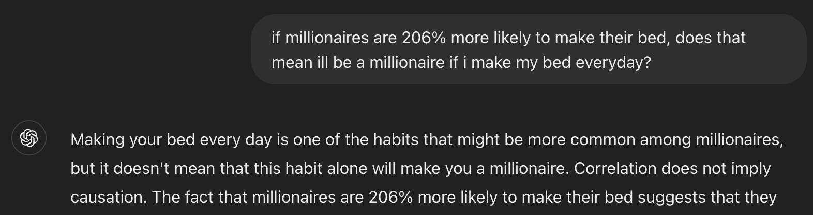
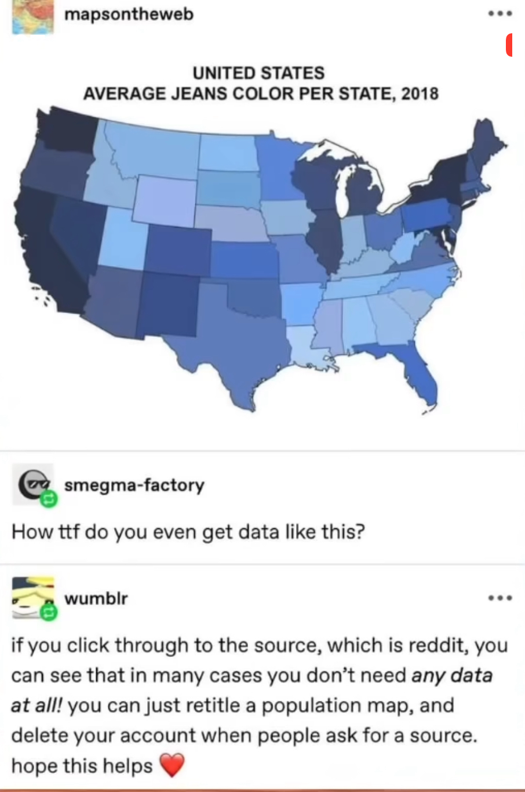

july 27, 2024
did you know that hong kong's higher life expectancy relative to india is directly related to their meat consumption?
of course you didn't! someone on the internet made up that correlation.
actually! it is not even a correlation! mathematically you can draw a line through any two points, i could be plotting the number of birkenstock sales in the united states and the ocurrence of foot fungus per 1000 people, and those two dots would still make a line.
the original statistic on meat consumption and life expectancy was actually part of a post influencing people to a carnivorous diet. apparently veganism is no longer the hip and healthy thing to do, because eating raw sticks of butter and consuming unpasteurized dairy is the trend now. i actually have too many opinions about this, but i won't babble on.
anyway! here's a couple i collected from doomscrolling on reels
the average income per house hold in the united states in 2022 was $106,400, according to table A2 on income in the united states, made by the united states census bureau. this is correct but misleading - the fact that the average is 106,400 does not mean that the average joe is making 106,400.
data distribution matters. especially when 1% of the population holds 30.4% of the country's wealth as of Q1 2024. here, a different measure of central tendency, the median, is much more appropriate, and that number is $74,580.
measures of dispersion would give nice insight, but if your attention span can only capture one number at a time, let it be the median.
*olivia rodrigo's making the bed plays*
this particular reel reeked so much of bad statistics i spent 20 minutes digging into where it came from.
so hold on tight.
this particular quote was not sourced to anywhere, but google searches led me to this CNBC article citing this guy, randall bell, who is a real estate damage economist. in an article titled "7 'rich habits' of highly successful people, from a man who studied them for 25 years" , they write that randall bell surveyed 5000 people and "statistically correlated various habits with different meaasures of success."
i actually think this guy made up that title, if you search "real estate damage economist" you get his wikipedia page and his research group, it's a one to one mapping.
i'd like to say that i have no problems with the cnbc article, if anything it's factually correct. millionaires do excercise, and do read, and they wake up early, and they have etiquette, and they write things down. sure. my problem is with reproductions of that article or citation, purposely worded to imply causation.
titles like "want to be a millionaire? make your bed", and "making your bed can make you a millionaire" spin correlation into causation. which is arguably the deadliest sin of statistics. even GPT knows it's fake:
thank you for listening to my rant about bad statistics on the internet. remember kids, don't believe everything you read, not just because statistics can be used to tell false stories, but because you can also just make things up:
